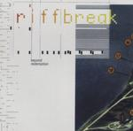

| Artist: | Riffbreak |
| Title: | Beyond Redemption |
| Label: | Bee & Bee Records BBRB 2000 |
| Length(s): | 38 minutes |
| Year(s) of release: | 2000 |
| Month of review: | [01/2001] |
| 1) | Denial Trademark | 8.08 |
| 2) | Freeze | 7.06 |
| 3) | The Clouds Of Oblivion | 15.40 |
| 4) | So Greedy | 7.37 |